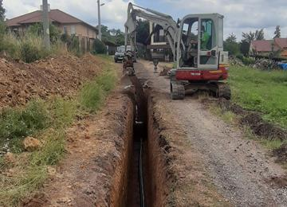
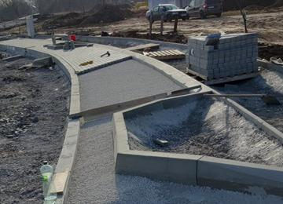
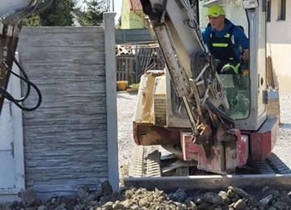
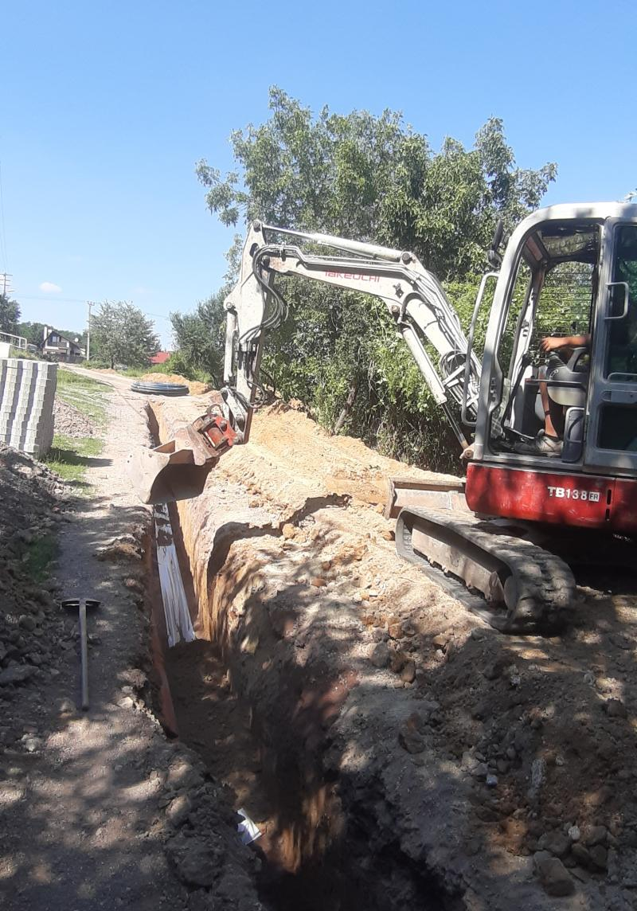
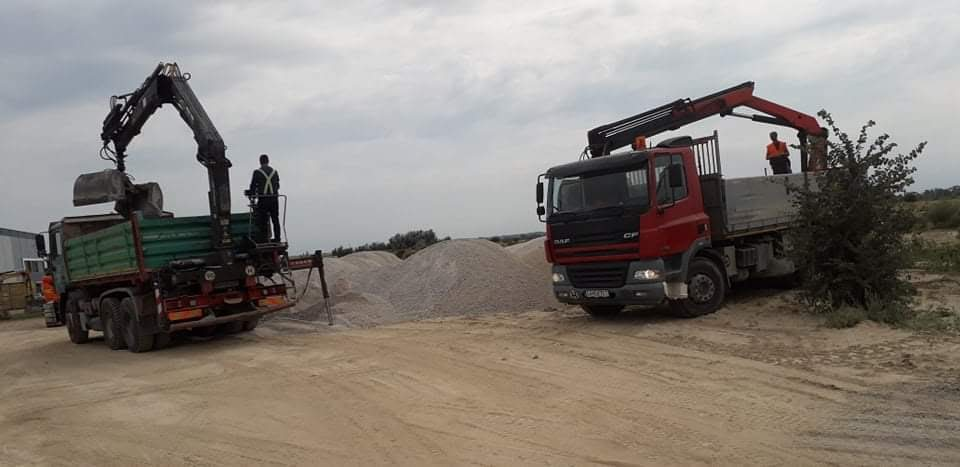

01 / VÝKOPY
Výkopové práce s bagrom
Bazény a iné výkopy do hĺbky 2,8 m, základy domov, oplotenie aj terénne úpravy.
PODHORA s.r.o. · Sereď
Výkopy, úpravy terénu, obrubníky, zámková dlažba, prípojky, hydraulická ruka aj búracie práce.
O firme
Naša firma sa zaoberá stavebnými a výkopovými prácami, ktoré vykonávame vlastnými strojmi. Realizujeme zákazky na celom Slovensku okrem východu.
Naše služby
Rozsah prác vychádza z aktuálnej ponuky firmy. Konkrétnu dostupnosť a cenu si overte telefonicky alebo dopytom.

Bazény a iné výkopy do hĺbky 2,8 m, základy domov, oplotenie aj terénne úpravy.

Cestné a parkové obrubníky, odvodňovacie žľaby, príprava a spevnenie plôch.

Búracie práce s pneumatickým kladivom a rozbíjanie betónov hydraulickým kladivom.
Kanalizačné a vodovodné prípojky medzi nehnuteľnosťou a verejnou sieťou.
Výkopy, vŕtanie dier, ukladanie žulovej kocky a súvisiaci dovoz či odvoz materiálu.
Nakladanie v stiesnených priestoroch a manipulácia so zeminou, štrkom, makadamom, pieskom a iným materiálom.

Technika v teréne
Vlastná technika je priamo súčasťou ponuky firmy. Pomáha pokryť výkop, manipuláciu aj odvoz v rámci jednej zákazky.
Ukážky realizácií
Originálne fotografie z webu firmy dokumentujú používanú techniku a realizované práce.

Dôveryhodnosť
Kontakt
Najrýchlejšie nás kontaktujete telefonicky. Prípadne pripravte dopyt a odošlite ho e-mailom.